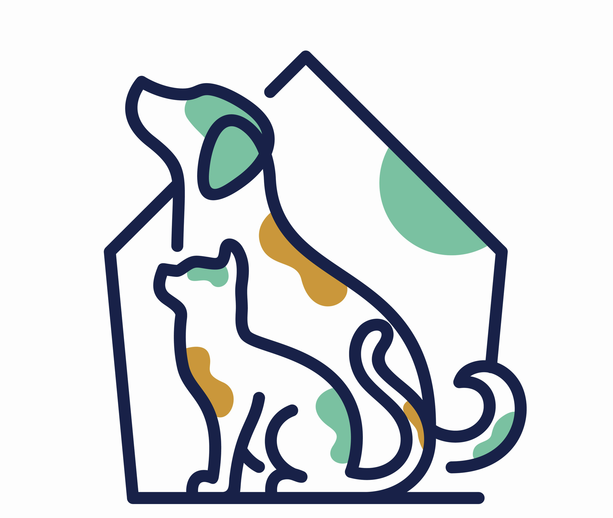

Sana Pet Rescue
Edina orphan pet rescue
Edina orphan pet rescue
It all started with an abandoned dog whom we named Magic. Sana pet rescue is a foster-based rescue for orphaned pets in Edina, MN and surrounding areas. Our mission is to provide care for the animal rescue organizations and impound facilities to improvce survival rates.
We strive for a world where every companion animal has a safe and loving home and their family has the knowledge and resources needed to give them the life they deserve.
We strongly hold the belief that a home offers a far more meaningful and preferable environment for most companion animals in need of an adoptive home, as opposed to a shelter or kennel. Consequently, we heavily depend on volunteers who graciously provide foster homes for rescued pets until they find their forever homes.
Each pet in our care is provided with routine vaccinations, spay/neuter procedures, microchipped, given internal and external parasite preventatives, and tested for common bloodborne pathogens such as heartworm and feline leukemia. Advanced veterinary care is provided to any animal that requires such services before adoption.
Please note: this means no animals are available at our facility for public viewing. If you are interested in meeting the animals we currently have for adoption, please visit our Adoption page.